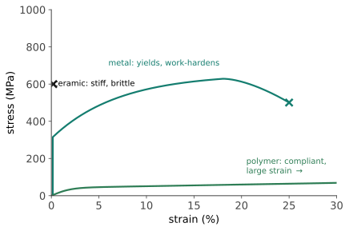
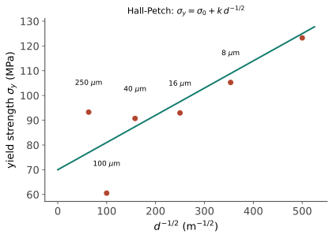
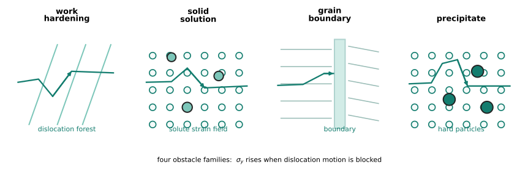
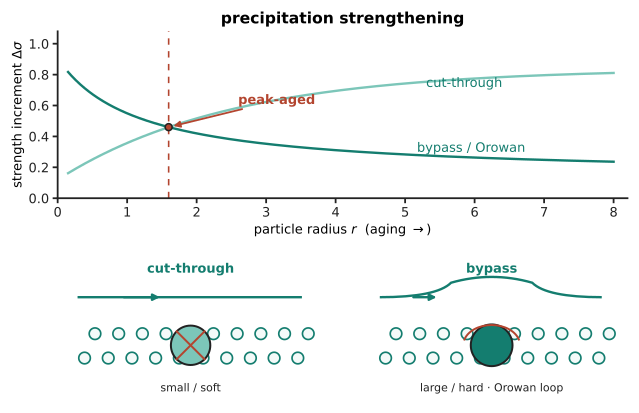

性能 I · 强度的微观起源与强化四法
线一说"缺陷决定命运"，线二给了操纵组织的手段——本页收获：强度到底是什么、怎么把它调上去。核心只有一句话：塑性变形 = 位错运动，所以强化 = 给位错设障碍。四种障碍物对应工业上全部四类强化手段，每种都有一个可算的定量关系。
1. 先读懂一条应力-应变曲线

五个必读量：弹性模量 \(E\)（斜率——键的事，热处理改不动，结构 I）；屈服强度 \(\sigma_y\)（位错开始大规模运动——本页主角，可调三倍以上）；抗拉强度 \(\sigma_{UTS}\)（颈缩起点）；延伸率（韧性的粗指标）；曲线下面积（断裂功 ≈ 韧性）。
工程应力应变 vs 真应力应变：前者用原始截面（工程用、有"下降段"假象），后者用瞬时截面（材料本构、单调上升）——颈缩后的下降是几何效应不是材料变软【研：Considère 判据 \(d\sigma/d\varepsilon = \sigma\) 给颈缩起点】。
2. 强化四法（位错的四种障碍物）
| 方法 | 障碍物 | 定量关系 | 代价 |
|---|---|---|---|
| 加工硬化 | 位错互相缠结 | \(\sigma \propto \sqrt{\rho}\)（Taylor） | 塑性耗尽、需退火恢复 |
| 固溶强化 | 溶质原子的应力场 | \(\Delta\sigma \propto \sqrt{c}\)（间隙式更凶） | 导电导热下降 |
| 细晶强化 | 晶界 | Hall–Petch \(\sigma_y = \sigma_0 + kd^{-1/2}\) | 几乎无代价（唯一"强韧双赢"） |
| 析出/弥散强化 | 第二相粒子 | 切过 or 绕过（Orowan \(\Delta\sigma \propto 1/\lambda\)） | 过时效退化、高温不稳 |


析出强化的两种机制（铝合金与高温合金的命门）：粒子小而软 ⇒ 位错切过（强化随粒子长大而增）；粒子大而硬 ⇒ 位错绕过留下位错环（Orowan，强化随间距增大而减）——两条曲线交点即峰值时效。工业上"固溶处理→淬火→时效"（T6 状态）就是把粒子尺寸精确停在这个交点上；过时效 = 走过头掉下来（🔗 热力 III 的形核长大在此收租）。

Hall–Petch 的边界：晶粒细到 ~10–20 nm 以下出现反 Hall–Petch（晶界体积占比过大、变形机制切换为晶界滑动）——纳米材料的著名转折【研】。
3. 高温：另一套规则（蠕变）
温度超过 \(0.4T_m\) 后，"强度"这个概念要换成蠕变抗力：恒应力下应变随时间缓慢增长（一次/稳态/三次三段）。稳态蠕变率
——又是 Arrhenius（热力 II 的老朋友）。抗蠕变设计的三条铁律：提高熔点（钨、铌基）；消灭晶界（涡轮叶片做成单晶！结构 III 埋的伏笔在此兑现——晶界高温是软肋）；堆稳定的析出相（镍基高温合金的 γ′ 相占体积 60%+，且高温下不粗化）。
主线回响：室温怕位错动、高温怕晶界动——"什么在动"决定"设计什么"，服役温度是选材的第一分水岭。
4. 数字感与反直觉
- 强度谱（MPa）：退火纯铝 ~35 ｜ 6061-T6 ~276 ｜ 低碳钢 ~250 ｜ 4340 淬火回火 ~1500 ｜ 马氏体时效钢 ~2000 ｜ 碳纤维束 ~4000；
- 比强度（强度/密度）才是航空的货币：钛合金与高强钢强度相近但密度只有 57%；
- 反直觉三连：加工硬化让金属变强却变脆（塑性储备被提前消耗）；最强的钢不是最硬的钢（硬度高≠承载能力强，还要看韧性——下一页）；细晶是唯一的免费午餐——其余三法都在拿塑性/导电/热稳定性换强度。
【研】对标 Courtney《Mechanical Behavior of Materials》与 Dieter；Taylor 关系推导、Orowan 应力、蠕变机制图（Ashby map）、Larson–Miller 参数外推是研究生标准装备。
强度讲完了"扛得住多大力"，但工程事故几乎从不发生在屈服——而在裂纹。下一页：断裂、韧性与疲劳，材料失效的真实剧本。